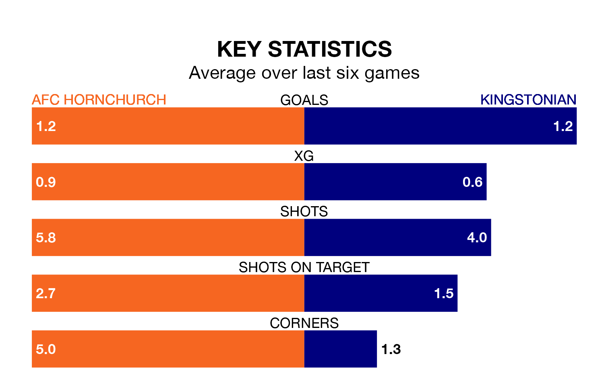

Relegation candidates Kingstonian face a challenge away against high-flying AFC Hornchurch at the Hornchurch Stadium on Saturday.
Kingstonian are rooted to the bottom of the Isthmian Premier Division table, and have picked up four wins and six draws in their 39 games to date.
Hornchurch, meanwhile, are top of the standings with 94 points, having won 29 and drawn seven.
Hornchurch are in reasonable form in the Isthmian Premier Division, with four wins and two losses from their last six games.
With no wins and six losses over that period, Kingstonian's form is much worse – they have taken no points from 18, compared to the home team's 12.
With 91 goals in 39 games so far this season, Hornchurch are the league's highest scorers with 2.3 goals per game. And they are conceding fewer than average, letting in 32 goals at a rate of 0.8 per game.
The visitors, meanwhile, are below average scorers, with 1.3 goals per game, compared to a league average of 1.6. They have conceded 2.5 goals per game.
In the last 10 years, Hornchurch and Kingstonian have played each other on 12 occasions. Hornchurch won seven of them, Kingstonian three, and they drew twice.
On average, Hornchurch scored 1.6 goals and Kingstonian 0.9 in those matches.
Their last meeting was on November 25, when Hornchurch won 3-0 away.
Hornchurch's last match was on April 20, a 1-0 win against Potters Bar Town.
Kingstonian lost 3-0 against Haringey Borough last time out, also on April 20.
Updated: 07:59 (UTC), 26/04/24